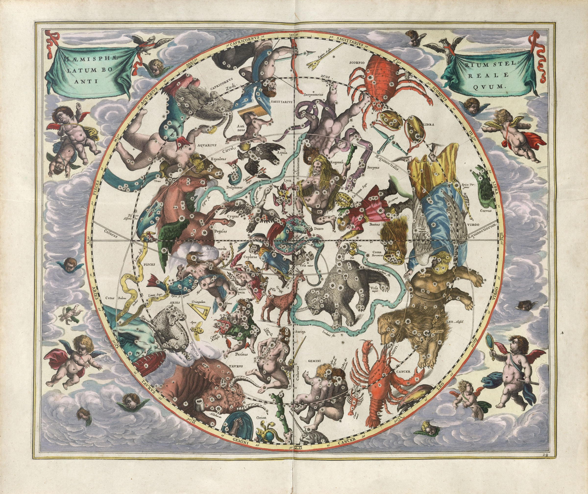

AI Engineer / Data Engineer · Bengaluru
Stuti Singh
Finding the signal in scattered data,
and drawing the map people trust.
In short
I design and ship backend applications, data pipelines and LLM-powered workflows, from architecture through implementation, validation and everyday use. Now: Founding Member & Engineer at Arkandis Labs, and Research Associate at IIM Bangalore.
Ch. 1 · The sky
Fifty million lines, redacted. Ten thousand sites, scored. Ninety-seven percent, right.
- 50M+
- lines of code redacted across 15+ codebases, still running
- 10,000
- websites qualified per run, in 15–25 minutes
- 95–97%
- syndication accuracy, where ChatGPT/Claude managed ~40%
- 90%
- fewer manual reporting errors after production ETL

Ch. 2 · The work
Every system is a constellation.
Contacts, websites, files, lines of code: scattered points are only useful once someone draws the lines between them, and says which ones to trust. Seven systems I built, in résumé order. The screens are the real software, running on demo data.
01 · Arkandis Labs · Jul 2026 – Present
Redacting 50M+ lines of code, and proving it still runs.
Founding Member & Engineer (Tech & Operations)
- 15+
- codebases
- 50M+
- lines of code
- 3–5 yrs
- Git history each
- Tooling that removes PII, images and third-party assets across entire repository trees, then checks the code continues to run.
- Every real value becomes one stable token in every file, so references stay consistent; the run fails if any real value survives.
- Ran redaction and data preparation across multiple companies for an AI training-data business that reported $400K+ revenue in its first four months.
Try it Type anything with names, emails or phone numbers
02 · LH2 Holdings · Dec 2025 – Jul 2026
A media-intelligence CRM, shipped solo to production.
Corporate Development Analyst (Founder’s Office)
- 95–97%
- syndication accuracy
- ~40%
- ChatGPT/Claude alternatives
- 100s
- of contacts, no missed replies
- Maps the right SPOCs at every media house, with their influence position and online presence.
- Personalised partnership emails from each person’s interests and influence; multi-user mailbox coordination and intelligent reply alerts.
- Outreach becomes scheduled sequences with a timeline, calendar and history. React · FastAPI · SQLAlchemy · PostgreSQL · Gmail API · Anthropic.


Real app, demo data · click to enlarge
03 · LH2 Holdings · data engineering
Where is a publisher syndicated? One call answers it.
- ~70%
- less manual research
- 10,000+
- records in PostgreSQL ETL
- Scraping infrastructure across hundreds of publications, feeding PostgreSQL ETL with enrichment, deduplication, schema validation and incremental sync.
- A FastAPI service checks MSN, Yahoo, NewsBreak and SmartNews presence with evidence URLs, caches results for 14 days, and fills a whole column from a Google Sheets add-on.
GET /v1/domain-signals?domain=example.com
{
"normalized_domain": "example.com",
"msn": true,
"msn_followers": 12400,
"yahoo": false,
"newsbreak": true,
"avg_month_visits": 2840000,
"us_country_share": 0.71,
"stale": false
}The real response shape, from the service README.
04 · LH2 Holdings · Research-Driven CRM
A CRM where the model never silently writes.
- Resolves parent/subsidiary relationships so every prospect maps to the right corporate entity.
- Bulk CSV/XLSX import with domain normalisation and deduplication across SQLite and PostgreSQL.
- A deterministic policy layer: uncertain classifications go to a person, overrides are recorded, every decision carries metadata and can be undone.
- FastAPI with JWT/RBAC; shared async adapters for Gmail, Drive, Notion and SignalHire.
Try it Move the line. Below it, nothing is written without a person.
0 applied0 to human review
# review gating follows model uncertainty, not network errors
decision["requires_review"] = bool(model_needs_review) or confidence < 0.65
# low-confidence "web verified" still needs a person
decision["requires_review"] = web_conf < 0.8Real lines from the import policy; the 48 records are sample data.
05 · LH2 Holdings · Lead-Qualification Pipeline
10,000 websites scored in 15–25 minutes. Nothing made up.
- 30
- concurrent fetches
- 100
- records per checkpoint
- ~70%
- lower LLM cost
- ICP scoring against funding stage, founder background and related signals, in two-phase async batches with robots.txt compliance and retries; runs resume after an interruption.
- A deterministic first pass and per-source disk caching settle the clear cases; the LLM only sees what rules can’t decide.
- Signals that can’t be found are marked unknown and sent to review, never fabricated.
Watch 10,000 sites through the real pipeline stages
0 scored0 settled by rules0 sent to the LLM
Stages and tiers from the repo; the split between tiers is illustrative.
06 · LH2 Holdings · Inventory Segmentor
1–2 TB of scattered data, mapped into licensable AI training corpora.
- Inventories local files, Google Drive, Gmail and Git repositories with source lineage.
- Discovery, extraction and classification checkpoint independently, with parallel workers, retry/backoff and resumability.
- PII is detected at ingestion; the deliverable is an auditable workbook with confidence, rationale and evidence on every row.
XLSX inventory.xlsx · 7 business buckets
| source | artifact | bucket | conf. | PII |
|---|---|---|---|---|
| drive | pricing_model_v3.xlsx | Financial & Legal | high | — |
| git | ingest/pipeline.py | Product & Engineering | high | — |
| gmail | RE: renewal terms | Customer & Sales | med | flagged |
| local | q3_offsite_notes.docx | Meeting Notes | high | — |
| drive | brand_guidelines.pdf | Marketing | high | — |
Real output columns and taxonomy; rows are illustrative.
07 · Wissen Technology · Jun 2024 – Oct 2025
Five years of BFSI data, made into one analytics layer leadership trusted.
Associate Consultant – Data Analytics (Chief of Staff Office)
- Consolidated 5+ years of historical data from major BFSI clients, validating, deduplicating and standardising schemas.
- Owned analytics across HR, Sales, Finance and Talent Acquisition; executive KPI frameworks and decision-support dashboards.
- Forecasting for hiring demand and resource allocation; led A/B testing of recruitment strategies.
- Star-schema models and Power BI governance across Dev, Staging and Production with RBAC and GDPR; automated anomaly alerts.
Ch. 3 · The record
Where the work happened.
Jul 2026 – Present
Arkandis Labs
Founding Member & Engineer (Tech & Operations)
Tech and operations for an AI training-data business: landing page, lead scraping and qualification, supplier intake, preparation and delivery. Redaction tooling, automated supplier collection, a demand tracker over LinkedIn, Reddit and X, and an outreach tracker that scores response signals.
Dec 2025 – Jul 2026
LH2 Holdings
Corporate Development Analyst (Founder’s Office)
The CRM, data infrastructure, Research-Driven CRM, lead-qualification pipeline and Inventory Segmentor, plus partnership and market analysis across media, healthcare, science and research for AI training-data opportunities.
Jun 2024 – Oct 2025
Wissen Technology
Associate Consultant – Data Analytics (Chief of Staff Office)
Analytics infrastructure, ETL, forecasting, experimentation and Power BI governance for HR, Sales, Finance and Talent Acquisition.
Feb 2026 – Present
IIM Bangalore (IIMB)
Research Associate – Entrepreneurial Leadership & Market Agility Research
Empirical research on entrepreneurial leadership and strategic decisions; econometric models of R&D versus marketing investment trade-offs, and frameworks for market agility under competitive pressure.
Sep 2023 – Feb 2024
NSRCEL, IIM Bangalore
Program Intern – Launchpad & Campus Founders Program
80+ startup applications analysed, 20+ founder interviews, a 700+ venture alumni dataset over seven years, and workshops on Lean Canvas, Design Thinking and pitch strategy.
Aug 2021 – May 2024
Mount Carmel College, Bengaluru
B.Sc. Economics & Statistics (Dual Major)
Selected project: an Automated Newsletter Generator that scrapes multi-source news, then ranks and groups stories with keyword extraction, topic modelling and clustering.
Ch. 4 · Instruments
What I build with.
- Programming & data
- Python, SQL, TypeScript, Pandas, NumPy
- Backend & application
- FastAPI, REST APIs, SQLAlchemy, JWT authentication, role-based access control, React, Vite
- Databases & architecture
- PostgreSQL, SQLite, database design, indexing, query optimisation, star schema, data modelling, schema validation
- Pipelines & automation
- ETL, asynchronous Python, aiohttp, parallel worker pools, checkpointing, retries/backoff, caching, incremental synchronisation
- AI & LLM systems
- OpenAI API, Anthropic API (Claude), RAG, LLM classification, confidence scoring, metadata extraction, human-review gates, response-aware replanning
- Collection & integrations
- Scrapy, BeautifulSoup, Selenium, Playwright, Gmail, Google Drive, Notion, HubSpot and Google Workspace APIs
- Deployment & quality
- Cloud deployment, Linux servers, GitHub Actions, API testing, integration testing, data validation, PII redaction
Ch. 5 · The signal
Have messy data and a decision to make?
Open to AI engineering and data engineering roles. Every email is read, and answered.